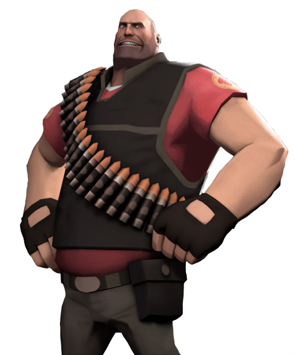
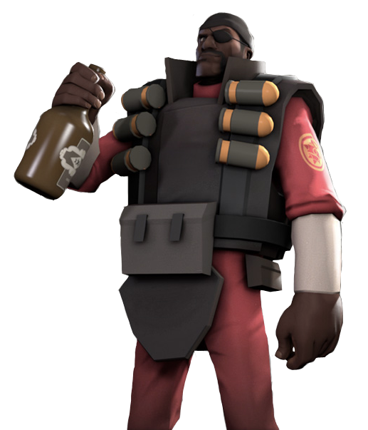
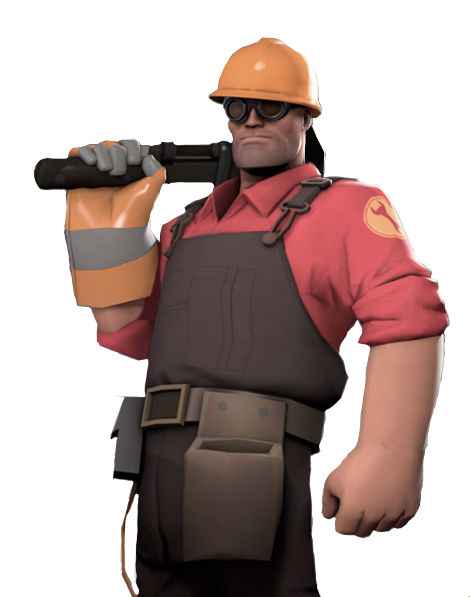

Heavy:

Country of Origin: Russia
Role: Defense
“Like a hibernating bear, the Heavy appears to be a gentle giant. Also like a bear, confusing his deliberate, sleepy demeanor with gentleness will get you ripped limb from limb. Though he speaks simply and moves with an economy of energy that's often confused with napping, the Heavy isn't dumb, he's not your big friend, and he generally wishes you'd just shut up before he has to make you shut up.” -Valve
MiniGun: This monstrous gun carries two-hundred rounds of ammo. A mid-range weapon with a fast rate of fire but slows you down when spun up.
Shotgun: A dependable side arm to the heavy’s arsenal this shotgun deals massive damage up close, but tickles the enemy from afar.
Fists: Go mono e mono with the heavy’s bare fists. Pummel enemies to the ground and reign supreme in combat.
Demoman:

Location of Origin: Ullapool, Scotland, United Kingdom
Role: Defense
“A fierce temper, a fascination with all things explosive, and a terrible plan to kill the Loch Ness Monster cost the six year old Demoman his original set of adoptive parents. Later, back at the Crypt Grammar School for Orphans near Ullapool in the Scottish Highlands, the boy's bomb-making skills improved dramatically. His disposition and total number of intact eyeballs, however, did not.” -Valve
Grenade Launcher: Launch pills into the enemy dealing area damage but this gun is hard to aim due to the trajectory of the pills.
Stickybomb Launcher: Setup explosive traps on the enemy by placing sticky bombs along doorways and tunnels.
Bottle: The ultimate bar fight weapon to whack foes in the head when you’re too drunk to aim.
Engineer:

Location of Origin: Bee Cave, Texas, USA
Role: Defense
“This amiable, soft-spoken good ol' boy from tiny Bee Cave, Texas loves barbeque, guns, and higher education. Natural curiosity, ten years as a roughneck in the west Texas oilfields, and eleven hard science PhDs have trained him to design, build and repair a variety of deadly contraptions.” -Valve
Shotgun: The main weapon for this Texan, you can’t always rely on a sentry and sometimes you need to get your hands dirty.
Pistol: Makes you wish you had a shotgun, this tiny gun carries more than enough ammo to hold off a small army but has terrible aim.
Wrench: This ain’t no ordinary melee weapon, in the hands of an Engineer you can upgrade buildings, remove a spy’s sapper, and repair damaged buildings.
Construction PDA: Use this device to access your blueprints and place buildings in an instant.
Destruction PDA: Strategically Destroy buildings with a push of a button.
Sentry Gun: The sentry gun can be upgraded to three levels. The first level is a slow firing pistol like gun. Level two adds two mini-guns to each side for a high knockback and fire-rate weapon. Level three adds a quad-rocket launcher on the top for large amounts of enemies.
Dispenser: Heal your team and replenish their ammo with the dispenser. It can also replace any lost metal from upgrading and placing buildings.
Teleporter: Need to move your team to the front lines fast? Use the teleporter! Just put an entrance near your spawn then place the exit teleporter to wherever the action is.